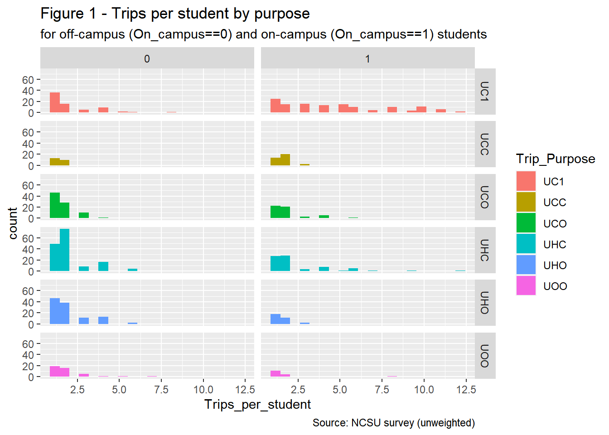

University
Caliper Corporation
5/12/2021
Introduction
The University Model captures the on- and off-campus travel behavior of students of the Triangle Region’s four main universities: North Carolina State University (NCSU), The University of North Carolina at Chapel Hill (UNC), Duke University (Duke) and North Carolina Central University (NCCU). In 2016, the four universities had a combined enrollment of 84481, with 31025 students at NCSU, 29437 at UNC, 15904 at Duke and 8115 at NCCU.
On- and off-campus students are expected to have different travel behavior. On-campus students are expected to make more trips and most of those trips are expected to start and end on campus. On-campus students are more likely to be undergraduate students who are enrolled at the university full-time while graduate students are more likely to reside off-campus.
The model is segmented by on-campus and off-campus student and by the following trip purposes:
- Home-Based-Campus (UHC)
- Home-Based-Other (UHO)
- Campus-Based-Other (UCO)
- On-Campus (UC1)
- Inter-Campus (UCC)
- University student Other-Other (UOO)
TRIP GENERATION
TRIP PRODUCTION RATES
Sources
2014 NCSU Survey
The trip production rates were developed based on a survey of NCSU students conducted by the Institute for Transportation Research and Education (ITRE) for the North Carolina Department of Transportation (NCDOT) in 2014.
After removing respondents who did not finish the survey and respondents with a mismatch of more than 1 between the stated number of trips and the number of trips for which they provided a description, the total number of complete and valid samples consists of 150 on-campus students and 186 and off-campus students. The breakdown by graduate and undergraduate students is presented in the table below. These respondents reported a combined 1974 trips.
| On_campus | Graduate | n |
|---|---|---|
| 0 | 0 | 66 |
| 0 | 1 | 120 |
| 1 | 0 | 138 |
| 1 | 1 | 12 |
The NCSU survey dataset includes person weights which were developed by ITRE based on residence locations (on-campus vs. off-campus), credit hours (full-time vs. part-time) and class status (undergraduate vs. graduate). A total of 148 on_campus and 186 off-campus records were assigned a weight. Based on the survey, the NCSU student population made a total of 167898.5197864 trips in 2016.
2012 Virginia Surveys
The trip production rates developed based on the NCSU survey were verified using trip rates based on surveys of students from 4 universities in Virginia conducted in 2009 and repeated for two of the universities in 2010, as summarized in Khattak et al. (2012). The first round of surveys obtained a sample size of 2784. The sample size of the second round was 2596.
Segmentation
The NCSU survey data was used to develop trip production rates for on-campus and off-campus students for 5 of the model’s trip purposes.
- Home-Based-Campus (UHC): P = Home
- Home-Based-Other (UHO): P = Home
- Campus-Based-Other(UCO): P = Campus
- On-Campus (UC1): P = Campus
- University student Other-Other (UOO): P = Origin
- Campus to Campus (UCC): P = Origin
Exploratory Analysis
Figure 1 shows the average number of trips per student per day for each of the 5 trip purposes for students residing on-campus and off-campus, based on the raw NCSU survey data. The distribution is skewed to the right, with most students making few trips and a few students making many trips per day.There appears to be more variability in the number of trips reported by on-campus students, especially in UC1 and UCH, which are trips that both start and end on campus for on-campus students.

To develop production rates, two methods were explored: cross-classification and regression. Explanatory variables in regression models tested included student characteristics such as class status (undergraduate and graduate), on and/or off-campus employment, credit hours (full-time or part-time), car availability as these were expected and/or shown by other research to affect university trip production rates. Because these explanatory variables are not part of the future year socioeconomic datasets, application of these models would not be feasible. The cross-classification findings are discussed below.
Cross-classification
As part of the cross-classification approach, daily trips per student reported in the NCSU survey were classified based on the following criteria:
1) place of residence: on-campus or off-campus
2) trip purpose: UHC, UHO, UCO, UC1 or UOO
3) mode: walk, bike, bus (includes public bus and shuttle), drive, carpool and other
Production rates were developed based on raw data and based on weighted data. The rates based on the weighted data are very similar to the rates based on the raw data.
Based on the weighted data, the average daily trips rate is 5.7966024. On-campus students make an average of 7.1248221 trips per day while off- campus students make an average of 5.1581413 trips per day. Rates by trip purpose show that on-campus students make more on-campus trips than off-campus students but make fewer off-campus trips.
Comparison to Khattak et al (201
Consistent with our findings, Khattak et al found that students who reside on-campus make more trips (especially on-campus trips) than those who reside off-campus and that they walk more and drive less than off-campus students. They estimate production trip rates that were somewhat lower than the production rates selected for this study. During first round of surveys at ODU, VT, UVA and VCU, daily trip rates ranged from 4.4 to 4.9. For the second round of surveys, the survey instruments were revised to reduce the survey response burden and a larger sample size was obtained. Based on the second round, daily trip rates were 5.3 at ODU and 5.6 at VT.
| segment | Trip_Purpose | Production Rate | Sample Size |
|---|---|---|---|
| On_campus Students | UC1 | 4.482 | 150 |
| On_campus Students | UCC | 0.384 | 150 |
| On_campus Students | UCO | 0.650 | 150 |
| On_campus Students | UHC | 1.195 | 150 |
| On_campus Students | UHO | 0.256 | 150 |
| Off_campus Students | UC1 | 0.808 | 186 |
| Off_campus Students | UCC | 0.183 | 186 |
| Off_campus Students | UCO | 0.795 | 186 |
| Off_campus Students | UHC | 1.714 | 186 |
| Off_campus Students | UHO | 1.240 | 186 |
UOO Trip Rates by Mode
Trip production rates by mode will be used to estimate a trip production rate for UOO trips based on the relationship between trip production by mode for UOO trips and for UHO and UCO trips. SCOPE: “The UOO trips should be generated separately by mode as a function of (or rate per) UHO and UCO off-campus trip ends by mode and optionally a nearby accessibility variable (provided by Caliper). UOO trip generation and distribution models will therefore be implemented to run at the end of the university model after the other trip purposes”
| Segment | Mode | Trip Rate | Respondents | Segment Sample Size |
|---|---|---|---|---|
| On-campus Students UHO UCO Trips | Bicycle | 0.0133333 | 1 | 150 |
| On-campus Students UHO UCO Trips | Bus | 0.1000000 | 11 | 150 |
| On-campus Students UHO UCO Trips | Car | 0.4133333 | 40 | 150 |
| On-campus Students UHO UCO Trips | Carpool | 0.2200000 | 23 | 150 |
| On-campus Students UHO UCO Trips | Walk | 0.2200000 | 19 | 150 |
| Off-campus Students UHO UCO Trips | Bicycle | 0.0107527 | 1 | 186 |
| Off-campus Students UHO UCO Trips | Bus | 0.0806452 | 11 | 186 |
| Off-campus Students UHO UCO Trips | Car | 0.3333333 | 40 | 186 |
| Off-campus Students UHO UCO Trips | Carpool | 0.1774194 | 23 | 186 |
| Off-campus Students UHO UCO Trips | Walk | 0.1774194 | 19 | 186 |
| Segment | Mode | Trip Rate | Respondents | Segment Sample Size |
|---|---|---|---|---|
| On-campus Students | Bus | 0.0133333 | 2 | 150 |
| On-campus Students | Car | 0.0266667 | 3 | 150 |
| On-campus Students | Carpool | 0.1133333 | 10 | 150 |
| On-campus Students | Walk | 0.0266667 | 2 | 150 |
| Off-campus Students | Bus | 0.0215054 | 4 | 186 |
| Off-campus Students | Car | 0.3333333 | 35 | 186 |
| Off-campus Students | Carpool | 0.0430108 | 4 | 186 |
| Off-campus Students | Walk | 0.0430108 | 6 | 186 |
Trip productions by TAZ were estimated by applying the trip production rates as follows:
On-Campus Students:
* UC1 Productions =
Share of campus buildings in TAZ * enrollment * UC1 On-campus production rate
* UCO Productions=
Share of campus buildings in TAZ * enrollment * UCO On-campus production rate
* UHC Productions =
Number of students in student group quarters in * UHC On-campus production rate
* UHO Productions =
Number of students in student group quarters * UHO On-campus production rate
* UCC Productions =
Number of students in student group quarters * UCC On-campus production rate
Off-Campus Students:
* UC1 Productions =
Share of campus buildings in TAZ * enrollment * UC1 Off-campus production rate
* UCO Productions =
Share of campus buildings in TAZ * enrollment * UCO Off-campus production rate
* UHC Productions =
Number of students in off-campus housing * UHC Off-campus production rate
* UHO Productions =
Number of students in off-campus housing * UHO Off-campus production rate
* UCC Productions =
Number of students in off-campus housing * UCC Off-campus production rate
| Segments | Productions |
|---|---|
| Productions_UHC_On_Campus_NCSU | 14846 |
| Productions_UHO_On_Campus_NCSU | 3185 |
| Productions_UCO_On_Campus_NCSU | 20166 |
| Productions_UC1_On_Campus_NCSU | 139046 |
| Productions_UCC_On_Campus_NCSU | 11929 |
| Productions_UHC_Off_Campus_NCSU | 31876 |
| Productions_UHO_Off_Campus_NCSU | 23073 |
| Productions_UCO_Off_Campus_NCSU | 24654 |
| Productions_UC1_Off_Campus_NCSU | 25079 |
| Productions_UCC_Off_Campus_NCSU | 5666 |
| Productions_UHC_On_Campus_UNC | 13611 |
| Productions_UHO_On_Campus_UNC | 2920 |
| Productions_UCO_On_Campus_UNC | 19134 |
| Productions_UC1_On_Campus_UNC | 131929 |
| Productions_UCC_On_Campus_UNC | 11318 |
| Productions_UHC_Off_Campus_UNC | 30926 |
| Productions_UHO_Off_Campus_UNC | 22386 |
| Productions_UCO_Off_Campus_UNC | 23392 |
| Productions_UC1_Off_Campus_UNC | 23795 |
| Productions_UCC_Off_Campus_UNC | 5376 |
| Productions_UHC_On_Campus_Duke | 6916 |
| Productions_UHO_On_Campus_Duke | 1484 |
| Productions_UCO_On_Campus_Duke | 10338 |
TRIP ATTRACTION RATES
Sources
As the trip production rates, trip attraction rates for off-campus attractions (UHO and UCO) were developed based on a survey of NCSU students conducted by ITRE for NCDOT in 2014. For UHO trips by off-campus students, both trips ends are off-campus. The number of trip attractions is estimated as a function of the land use of the zone. For UCO trips and for UHO trips by on-campus students, the production end is the campus. Therefore, in addition to land use variables of the attraction zone, the attraction model for these segments also considers distance between the zone and campus.
For on-campus attractions (UHC,UC1), the attractions are distributed among campus zones proportional to the distribution of the building square feet.
Exploratory Analysis
Correlations
Correlations between the university attractions by TAZ and TAZ land use characteristics are presented below. For trip attractions by on-campus students, the off-campus student population and the number of retail jobs have the highest correlation coefficients. (The number of students in student group quarters is also relatively highly correlated with trips by off-campus students - can they be in off-campus zones?) For trips by off-campus students, off-campus students has the highest correlation coefficient.| term | AllStudents_Trips | OnCampusStudents_Trips | OffCampusStudents_Trips |
|---|---|---|---|
| AllStudents_Trips | NA | 0.657 | 0.970 |
| OnCampusStudents_Trips | 0.657 | NA | 0.453 |
| OffCampusStudents_Trips | 0.970 | 0.453 | NA |
| OnCampusStudents_UHOTrips | 0.628 | 0.779 | 0.491 |
| OnCampusStudents_UCOTrips | 0.646 | 0.910 | 0.470 |
| OnCampusStudents_UOOTrips | 0.209 | 0.674 | 0.030 |
| OnCampusStudents_UHOUCOTrips | 0.714 | 0.970 | 0.531 |
| OffCampusStudents_UHOTrips | 0.851 | 0.327 | 0.900 |
| OffCampusStudents_UCOTrips | 0.887 | 0.533 | 0.877 |
| OffCampusStudents_UOOTrips | 0.417 | 0.054 | 0.477 |
| OffCampusStudents_UHOUCOTrips | 0.965 | 0.477 | 0.987 |
| HH | 0.084 | -0.002 | 0.103 |
| Stud_GQ | 0.086 | 0.131 | 0.060 |
| StudGQ_NCSU | 0.074 | 0.149 | 0.039 |
| StudOff_NCSU | 0.277 | 0.180 | 0.270 |
| StudGQ_UNC | 0.009 | -0.026 | 0.019 |
| Total_POP | 0.098 | 0.042 | 0.105 |
| employment | 0.016 | 0.004 | 0.010 |
| Industry | -0.003 | -0.076 | 0.022 |
| Office | -0.024 | -0.048 | -0.018 |
| Service_RateHigh | 0.037 | 0.016 | 0.037 |
| Service_RateLow | -0.014 | -0.006 | -0.017 |
| Retail | 0.093 | 0.137 | 0.052 |
Regression Models
UCO trips by On-campus students
The first model explains the number of trip attractions at the TAZ level based on the number of the students residing in the TAZ and the number of retail jobs in the TAZ. The dataset used to estimate this model includes all TAZs, except those for which UCO on-campus attractions are N/A. The coefficients have the expected signs.| variable | estimate | statistic | p.value |
|---|---|---|---|
| OnCampusStudents_UCOTrips | 20.9149 | 2.8006 | 0.0056 |
| Retail | 0.0218 | 1.2297 | 0.2203 |
| StudOff_NCSU | 0.1052 | 2.9866 | 0.0032 |
| Adjusted R-squared | 0.0391 | NA | NA |
## Warning: Removed 2 rows containing missing values (geom_point).
The second model adds the distance between the TAZ and campus to the first model. The distance between the TAZ and campus is calculated as the average straight line distance between the TAZ and the centroids of the different NCSU campus TAZs. (confirm campus definition). As expected, attractions decrease as the distance increases.
The third model is estimated using only TAZs with UCO trips.| variable | estimate | statistic | p.value |
|---|---|---|---|
| OnCampusStudents_UCOTrips | 140.8144 | 4.7578 | 0.0000 |
| Retail | 0.0067 | 0.1634 | 0.8711 |
| StudOff_NCSU | 0.0967 | 0.9934 | 0.3272 |
| Adjusted R-squared | -0.0272 | NA | NA |
UHO trips by On-campus students
As UCO trips by on-campus students, UHO trips by on-campus students are trips between the campus and off-campus location. The model explains the number of trips based on the number of off-campus students residing in the TAZ and the number of retail jobs. Including distance in the UHO on-campus models results in illogical coefficients.| variable | estimate | statistic | p.value |
|---|---|---|---|
| OnCampusStudents_UHOTrips | 5.5856 | 1.6689 | 0.0968 |
| Retail | 0.0247 | 3.2225 | 0.0015 |
| StudOff_NCSU | 0.0292 | 1.8447 | 0.0666 |
| Adjusted R-squared | 0.0528 | NA | NA |
Limiting the dataset to only TAZs to which on-campus students made UHO trips does not improve the model.
| variable | estimate | statistic | p.value |
|---|---|---|---|
| OnCampusStudents_UHOTrips | 83.2522 | 4.1596 | 0.0004 |
| Retail | 0.0134 | 0.6014 | 0.5537 |
| StudOff_NCSU | 0.0482 | 0.6814 | 0.5028 |
| Adjusted R-squared | -0.0565 | NA | NA |
UcO trips by Off-campus students
As UCO and UHO trips by on-campus students, UCO trips by off-campus students are trips between the campus and off-campus location.| variable | estimate | statistic | p.value |
|---|---|---|---|
| OffCampusStudents_UCOTrips | 53.2668 | 2.9468 | 0.0036 |
| Retail | 0.0291 | 0.7037 | 0.4824 |
| StudOff_NCSU | 0.3034 | 3.5545 | 0.0005 |
| Adjusted R-squared | 0.0523 | NA | NA |
Adding distance
This model is estimated based on a dataset that only includes Taz with UCO trips from off-campus students.
| variable | estimate | statistic | p.value |
|---|---|---|---|
| OffCampusStudents_UCOTrips | 148.4455 | 3.3584 | 0.0013 |
| Retail | 0.0436 | 0.5493 | 0.5847 |
| StudOff_NCSU | 0.8813 | 3.9476 | 0.0002 |
| Adjusted R-squared | 0.1716 | NA | NA |
UHO Trips by Off-campus students
UHO trips by off-campus students have two off-campus trip ends.| variable | estimate | statistic | p.value |
|---|---|---|---|
| OffCampusStudents_UHOTrips | 100.1907 | 5.3782 | 0.0000 |
| Retail | 0.0394 | 0.9239 | 0.3567 |
| StudOff_NCSU | 0.2240 | 2.5456 | 0.0117 |
| Adjusted R-squared | 0.0249 | NA | NA |
Conclusion Trip Attraction
The tables below present the off-campus attraction models without distance and with distance. For the UHO On campus segment, adding distance to campus to the model gives illogical signs so a distance model was not included for that segment. There is also no distance model for the UHO off-campus student segment because the production end of those trips is off-campus.
Caliper Corporation, 2021